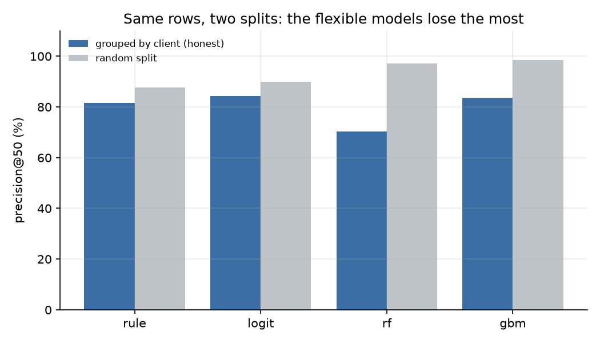
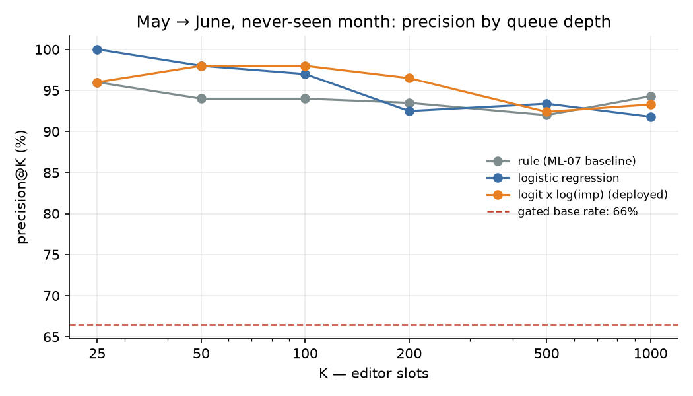
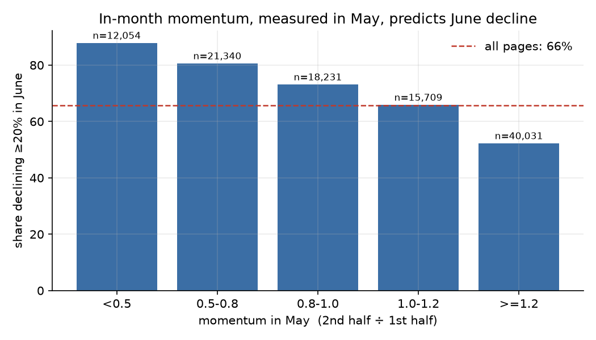

Abstract. A content editor with fifty review slots a week needs to know which pages to look at before next month, and a plausible rule — big pages that are already slipping — is cheap to write but has never been checked on a month it could not see. Using the FlyRank warehouse release, I built monthly features for every page (traffic, momentum, CTR, position, age), labelled a page “at risk” when its next month's impressions fell at least 20%, and trained a logistic model on March→April 2026. Validated with folds grouped by client and then tested once on May→June, the model reached **49 of the top 50** by precision at 50, against **47 of 50** for the hand-written baseline — a two-page difference with overlapping confidence intervals. The more useful finding is methodological: on a random split the flexible models looked far better (98% vs 84%), but grouping folds by client collapsed them, showing that most of their apparent skill was memorising clients rather than reading pages. The result is a decision-support queue with reason codes and three actions, not a claim that refreshing a page will recover its traffic.
An editor at a content agency has roughly fifty slots a week and several clients. A slot costs a day of writing, editing and QA, so a bad pick costs twice: the refresh does not happen, and a page that needed one is not touched. Ranking is the whole job. The unit is one content item for one client over one calendar month; the output is an ordered queue; the human action is one of three: check the page's indexing, refresh its content, or wait a month.
This is a ranking problem, so accuracy is the wrong metric. The metric is precision@K — of the top K pages a queue puts first, how many actually declined — and it is only readable beside the base rate: the share that would be right with no model at all.
Everything comes from the gated FlyRank warehouse release
(flyrank_pseudonymized_warehouse_release_v20260703), read with DuckDB straight from Hugging Face: daily search performance
per page and a content dimension table. Two month-pairs are used, and nothing else.
| Window | Features | Outcome | Pages | Clients | Base rate |
|---|---|---|---|---|---|
| Train | 2026-03 | 2026-04 | 100,893 | 43 | 0.515 |
| Future test (used once) | 2026-05 | 2026-06 | 111,075 | 48 | 0.656 |
| Scored population (≥ 500 impressions) | 2026-05 | 2026-06 | 59,874 | 48 | 0.665 |
Excluded on purpose. The 90-day query table is out: its window runs 2026-04-02 to
2026-06-30, which contains the outcome month — using it would be reading the answer. Every current-state
field in the content table is out too (content_updated_date,
last_optimized_date, publication flags, word count): they describe the snapshot as of July, so
a page “updated” in May would leak that someone was already working on it. Page age is the exception,
because a creation date cannot change after the fact. Pages below 100 monthly impressions are excluded as
too thin to rank, and the published queue applies a 500-impression floor, because an editor's slot is worth
the same for a noisy 80-impression page and a 50,000-impression one — and only one of them is a real story.
| Feature | Computed as | Knowable at the decision date because |
|---|---|---|
log_imp | log(1 + month impressions) | the month is closed |
days_with_imp | days with any impressions | already observed |
momentum_f | 2nd half ÷ 1st half of the month, capped at 3 | both halves are in the past |
has_h1 | 1 when the first half had zero impressions | a flag, so an undefined ratio is not read as zero |
ctr | clicks ÷ impressions × 100 | same closed month |
pos | mean position, “no data” excluded | same closed month |
pos_missing | 1 when position was never reported | a flag, so a fill cannot pass as a measurement |
age_days | decision date − creation date | immutable |
Label. A page is “at risk” when the next month's impressions fall at least 20% below the feature month's. That band is a choice, not a natural fact: a client whose whole inventory fell labels almost everything, and a healthy client labels almost nothing.
Baseline, frozen. A three-condition rule from an earlier week: at least 500 impressions, traffic present in the first half of the month, and momentum below 0.8; score = impressions × fraction of traffic lost in-month. It is re-computed here on the same rows and never re-tuned.
Two questions, two splits. Will it work on a client it has never seen? 5 × 20% held out, grouped by client, on the training month — with a random split of the same rows beside it, so the gap is visible. Will it work next month? Fit on all of March, predict May, score against June. One shot. The June partition was never opened before this test.
Leakage checks run in the notebook, not asserted in prose: no outcome column in the feature list; every feature month strictly before its outcome month; the feature matrix rebuilt from a frame with all outcome columns deleted, and verified identical; no snapshot metadata in the features. The controlled test that the harness works was done earlier in the project — adding the label's own source drove ROC-AUC to exactly 1.0000 before the column was removed.

| Model | P@50, grouped | P@50, random | Gap | AUC, grouped |
|---|---|---|---|---|
| Rule (baseline) | 0.816 | 0.876 | +0.060 | 0.550 |
| Logistic regression | 0.844 | 0.900 | +0.056 | 0.677 |
| Random forest | 0.704 | 0.972 | +0.268 | 0.655 |
| Gradient boosting | 0.836 | 0.984 | +0.148 | 0.656 |
On a random split, gradient boosting looks excellent (0.984) and the forest nearly as good (0.972), while the rule manages 0.876. Group the folds by client and the order inverts: boosting falls to 0.836, the forest to 0.704, and logistic regression holds at 0.844 with the best grouped AUC (0.677). With 43 clients and one of them large, a random split lets a tree recognise a client and score its pages from its siblings. The model carried forward is therefore the boring one: eight coefficients, stable across both splits.

| Ranking | P@50, ≥500 imp | 95% CI | P@50, all pages | AUC, ≥500 imp |
|---|---|---|---|---|
| Rule (baseline) | 0.940 | 0.86–1.00 | 0.940 | 0.615 |
| Logistic regression | 0.980 | 0.94–1.00 | 0.900 | 0.705 |
| Random forest | 0.880 | 0.78–0.96 | 0.860 | 0.696 |
| Gradient boosting | 0.900 | 0.82–0.98 | 0.900 | 0.667 |
The logistic model leads at the editor's operating point: 49 of the top 50 declined, against 47 of 50 for the rule. The bootstrap intervals overlap, so the honest reading is “two pages better on this draw”, not “transformed”. The baseline is not humiliated — a rule with three conditions and no fitting reaches 94% six weeks after its thresholds were set — and that is the point of having it.
| Ranking | Clients in top 50 | Largest client share | Median impressions | P@50 |
|---|---|---|---|---|
| Rule | 11 | 16/50 | 55,348 | 0.94 |
| Logistic, probability only | 20 | 9/50 | 674 | 0.98 |
| Logistic × log(impressions) | 14 | 14/50 | 29,009 | 0.98 |
| Logistic × √impressions | 10 | 23/50 | 118,895 | 0.76 |
Both good rankings hit the same precision on different pages. The rule's queue is a handful of very large pages; the model's is broader and smaller. Weighting the model's probability by log impressions keeps its precision while multiplying the traffic at stake per slot by roughly forty — and weighting by raw impressions shows the failure mode: size takes over, and precision collapses to 0.70.

What the model leans on, in standardised coefficients: momentum (−0.595), the zero-first-half flag (−0.424), CTR (−0.370), log impressions (−0.203), then age and position (−0.083 each). Direction only — not causal effects. The weak age coefficient is the third independent sign that staleness is not the driver the refresh heuristic assumes; in the previous week's audit the field that would measure it turned out to exist only as a July snapshot, with 82% of pages carrying an update date after the decision.
check_indexing action, and it is a rule of thumb, not a validated classifier.The deployed score is P(decline) × log(1 + impressions) over pages with at least 500 monthly
impressions: probability of a real decline, weighted by how much traffic is at stake. Actions come from the
feature month alone.
| Action | Condition | What the editor does |
|---|---|---|
check_indexing | momentum < 0.10 — traffic stopped mid-month | verify canonical, redirects, robots/noindex and analytics before touching copy |
refresh_content | momentum < 0.8 and ≥ 500 impressions | update the page, then measure against the baseline rate |
monitor | everything else the model still ranks | one more month of data; no slot yet |
These are the first ten rows of the backtested queue — built from May, scored against June. The last column is what actually happened; it is shown for review and was never an input.
| # | Page (pseudonym) | May imp. | Momentum | Position | Action | June |
|---|---|---|---|---|---|---|
| 1 | content_11bf4c | 88,175 | 0.02 | 13.5 | check indexing | +21.6% |
| 2 | content_f79972 | 75,264 | 0.14 | 9.2 | refresh content | -92.3% |
| 3 | content_a14cf3 | 40,880 | 0.04 | 7.4 | check indexing | -72.5% |
| 4 | content_58fa49 | 75,272 | 0.17 | 7.0 | refresh content | -73.1% |
| 5 | content_7918f4 | 73,849 | 0.30 | 8.1 | refresh content | -25.8% |
| 6 | content_72524c | 67,712 | 0.18 | 7.7 | refresh content | -56.5% |
| 7 | content_4ab17d | 29,530 | 0.01 | 9.9 | check indexing | -83.0% |
| 8 | content_3961d5 | 45,102 | 0.20 | 8.6 | refresh content | -88.9% |
| 9 | content_762945 | 53,772 | 0.13 | 9.8 | refresh content | -96.6% |
| 10 | content_60e0c9 | 46,086 | 0.11 | 3.7 | refresh content | -47.7% |
Nine of ten declined and the queue as a whole hit 49 of 50. The one that did not — the top row, a check-indexing case whose traffic stopped in the second half of May — grew 22% in June: a trough that looked exactly like a break. That is the honest failure mode of a single month of momentum, and it is why the first action is a fifteen-minute check rather than a rewrite.
How to use it tomorrow. Work down the queue, but read the action first: a
check_indexing row is a technical check; a refresh_content row is the writing slot;
monitor means the score is high but no pattern is clear, so a month of data is cheaper than a
guess. After four weeks, compare refreshed pages against the visible_slip baseline rate. That
comparison is what would eventually turn this ranking into evidence about refreshes — and it is not
something this dataset can do on its own.
Everything is in one public repository: the executed notebook, the metrics receipt and the paper source.
Seeds: SEED = 42 for every split, forest and bootstrap; logistic regression is
deterministic under lbfgs. Run the notebook top to bottom after pip install -r requirements.txt;
it needs a Hugging Face read token in .env or a Colab secret, scans four month partitions on
the first run (~2–4 minutes) and caches the frames afterwards. The June partition was unread until this
test and was used once as the outcome month; there is no second holdout, which is why the limitations
section is longer than the results.
Built on the FlyRank ML Internship dataset — flyrank.ai. The release is a pseudonymized, gated warehouse snapshot; no client names, domains, raw URLs, or raw queries appear in this paper or in the notebook behind it. Thanks to FlyRank for publishing real search-performance data in a form that can be analysed without exposing anyone's business.
Decision-support research on anonymized historical data. Observed patterns, measured comparisons and a validated ranking — not causal claims about Google's algorithm and not evidence that refreshing a page recovers its traffic.